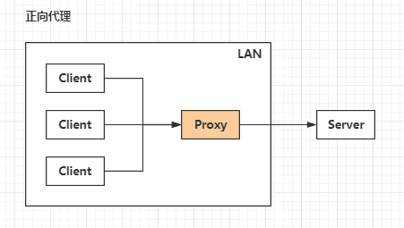
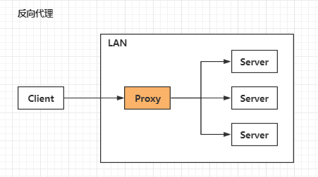

A 同学在大众创业/万众创新的大时代背景下开启他的创业之路 , 目前他遇到的最大的一个问题就是启动资金 , 于是他决定去找马云爸爸借钱 , 可想而知 , 最后碰一鼻子灰回来了 , 情急之下 , 他想到一个办法 , 找关系开后门 , 经过一番消息打探 , 原来A同学的大学老师王老师是马云的同学 , 于是 A 同学找到王老师 , 托王老师帮忙去马云那借 500 万过来 , 当然最后事成了 ; 不过马云并不知道这钱是 A 同学借的 , 马云是借给王老师的 , 最后由王老师转交给A同学 ; 这里的王老师在这个过程中扮演了一个非常关键的角色 , 就是 代理 , 也可以说是 正向代理 , 王老师代替A同学办这件事 , 这个过程中 , 真正借钱的人是谁 , 马云是不知道的 , 这点非常关键 ;
我们常说的代理也就是只正向代理 , 正向代理的过程 , 它隐藏了真实的请求客户端 , 服务端不知道真实的客户端是谁 , 客户端请求的服务都被代理服务器代替来请求 , 某些科学上网工具扮演的就是典型的正向代理角色 ; 用浏览器访问 http://www.google.com 时 , 被残忍的 Block , 于是你可以在国外搭建一台代理服务器 , 让代理帮我去请求 google.com , 代理把请求返回的相应结构再返回给我 ;
大家都有过这样的经历 , 拨打 10086 客服电话 , 可能一个地区的 10086 客服有几个或者几十个 , 你永远都不需要关心在电话那头的是哪一个 , 叫什么 , 男的 , 还是女的 , 漂亮的还是帅气的 , 你都不关心 , 你关心的是你的问题能不能得到专业的解答 , 你只需要拨通了 10086 的总机号码 , 电话那头总会有人会回答你 , 只是有时慢有时快而已 ; 那么这里的 10086 总机号码就是我们说的反向代理 ; 客户不知道真正提供服务人的是谁 ;
反向代理隐藏了真实的服务端 , 当我们请求 http://www.baidu.com 的时候 , 就像拨打 10086 一样 , 背后可能有成千上万台服务器为我们服务 , 但具体是哪一台 , 你不知道 , 也不需要知道 , 你只需要知道反向代理服务器是谁就好了 , www.baidu.com 就是我们的反向代理服务器 , 反向代理服务器会帮我们把请求转发到真实的服务器那里去 ; Nginx 就是性能非常好的反向代理服务器 , 用来做负载均衡 ;
两者的区别在于代理的对象不一样 : 正向代理代理的对象是客户端 , 反向代理代理的对象是服务端 ;


原文链接 : https://www.zhihu.com/question/24723688/answer/128105528